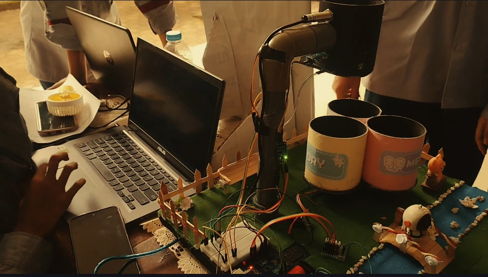

Fishing Static Website
A static website for a school project on the world of fishing. Created to help beginners understand the world of fishing—from techniques and equipment to the best spots.
View DetailsWeb Statis History Project
A static website for a history assignment on the theme of the Reformasi and the Evolution of Democracy in Indonesia. It presents historical content in an informative and engaging way using a modern web format.
View Details
TRASHWISE: Smart Automatic Waste Sorting Bin
This IoT project is a smart trash can capable of automatically sorting trash using sensors and a microcontroller—a smart solution for modern waste management.
View Details
Marketplace Digital Products & Souvenirs
A personal online store that sells a variety of digital products and souvenirs. It is independently managed as a way to foster an entrepreneurial spirit from an early age.
Visit StoreOrganization Profile Video
This project is currently in progress. Stay tuned for the latest updates!
Not Available YetCISCO Network Simulation
This project is currently in progress. Stay tuned for the latest updates!
Not Available YetStatistical Data Infographic
This project is currently in progress. Stay tuned for the latest updates!
Not Available Yet